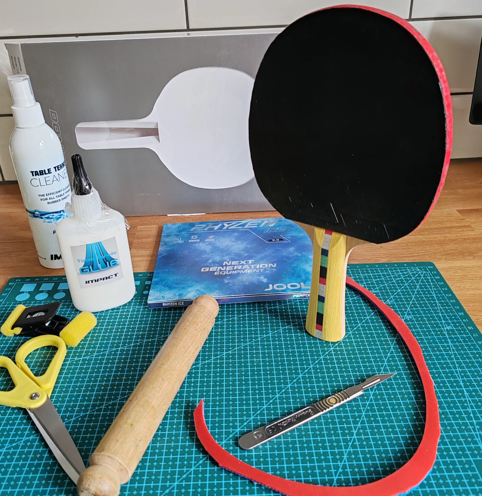

Batts/Bribar Table Tennis Supplies
For purchases or inquiries, please email Carl at carl.johnson.batts@gmail.com.
About Batts Table Tennis Supplies
We proudly supply all our table tennis equipment through Bribar Table Tennis.
We can order directly from Bribar.
Complimentary free bat assembly (cutting and gluing) with every rubber purchased.
Need a repair or re-rubbering. We also fit rubbers purchased elsewhere for £5 per side.
